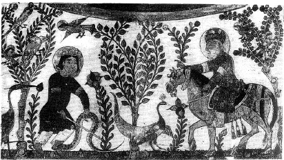

ŞEKİL 49. Hekim ve eczacı Andromakhos, yılan tarafından ısırılan çocuğa, yılanı öldürdükten sonra tedavi için yılan eti ile birlikte bir miktar defne ağacı tohumu yemesini salık verirken (İoannes Grammatikos’a yakıştırılan ve Galenos’un eserine dayalı olarak hazırlanan Kitab el-Tiryak (Panzehirler Kitabı) adlı, 13. yüzyıl Irak yazımı çeviri eserden).26, 116
Sönmemiş kireç ya da boraksın zırnıkla (arsenik sülfür) karıştırılıp kıvamı tavuk tüyü ile denenerek onun tüylerini dökene kadar kaynatılıp kurutulmasıyla elde edilen toz, “hamamotu” (“rusma”) olarak tanınırdı. Bu toza su eklenerek elde edilen macun, bedendeki fazla kılların dökülmesi için ülkemizde ve Yakındoğu’da yakın zamanlara dek yaygın olarak kullanılmıştır.
Deri üzerine süsleme amacıyla yapılan geleneksel dövmede, iğneyle resim çizildikten sonra çivit ve barutla sabitleştirilir. Üstünden kızgın yağ geçirilene “dağ” denir.12 Günümüzde Güneydoğu Anadolu’da Yezidiler arasında yaygın olan dövme tekniğinde ağırlıklı olarak anne sütü ve is karışımı, yanı sıra da kül, güherçile, rastıktaşı (antimon trisülfür), öd, safran ve kına gibi bileşenler kullanılmaktadır.
Çıkar Düşünmeyen Hekim adlı bir Batı kitabında, Doğu kökenli bir müstahzarat olan kilermeni (“kil-i ermenî”, Ermeni kili, Ermeni bolusu), demir oksit bileşimli bir malzeme olarak birçok yerde adı geçmektedir: “Kan yükselmesi (tansiyon) ve dizanteri için iyice dövülmüş ve elekten geçirilmiş kilermeniden bir altın ekü ağırlığındaki miktarı, eski ve berrak bir kadeh şarapla birlikte iki üç kere veriniz; hasta iyileşecektir...”.59
Osmanlı döneminde kimi tanınmış kil çeşitlerinin adları şöyleydi: “Gil-i ermenî” (gilermeni, kilermeni; Azerbaycan’ın dağlık yöresi olan Ermen’den geldiği için “Ermeni kili” değil, “Ermen kili” anlamına bu adla anıldığı söylenmektedir; veba salgınında can kurtaran deva olarak bundan yenirmiş), “gil-i hayâ” (Sakız Adası’ndan), “gil-i hurasânî” (Horasan kili; tehlikeli kanamalara ve kusmaya karşı ilaç olarak yenirmiş), “gil-i ikrîtus” (Girit kili), “gil-i kıbrısî” (Kıbrıs kili), “gil-i mahtûm” ( Limni Adası’ndan; mühür kili), “gil-i mısrî” (Mısır kili), “gil-i parsî” (İran kili), “gil-i rûmî” (Anadolu kili), “gil-i şâmûsî” (Samos kili), “gil-i zerd” (sarı kil).117
Mühür kili (Lat. “terra sigillata”) Romalılar tarafından da biliniyor, Limni Adası’ndan küçük topaklar halinde çıkarılarak üzerine mühür basılıyordu. Fransa’ya giden Türk elçileri mühür kilini kalıplar halinde birlikte götürüp büyük senyörlere armağan ediyorlardı. Fransa’da bu kil, aktarlarda “terre scellée” adıyla satılıyordu. Vebaya ve her türlü akıntıya karşı iyi bir ilaç olarak kabul ediliyordu ve halk tarafından gizli üretimi yasaklanan değerli bir madde niteliğindeydi.
Kırım Savaşı (1854-1856) sırasında antiseptikler henüz bilinmediğinden, kurtlanan yaralardan parazitlerin ayıklanmasından sonra yaraların içi tatlı sülümen [kalomel, civa(I)-klorür, Hg2Cl2)] ile dolduruluyordu.
Sürme denilen malzeme, antimon trisülfür (Sb2S3) içerikli rastıktaşı (sürmetaşı; Ar. “hacer el-kuhl”; Fars. “sormeh”; Osm. “kuhûl”) tozu, toz mazı, kına ve mum karışımından hazırlanır ve içine gülyağı ya da misk eklenir, kaş-göz boyamada kullanılırdı. Hazırlanan karışım, “sürmedenlik” adı verilen küçük bir bakır şişenin içine konur. Şişenin tıpasına bağlı bulunan ve dibine kadar uzanan düz bir metal çubuk, şişenin içine batırılıp çıkarılarak üzerine yapışan boya, kapatılan gözlere kirpikler üzerinden sürülür. Osmanlı döneminde kadınlar, yüzlerindeki kırışıklıkları gidermek, çilleri ve sivilceleri kapatmak ve tene renk vermek için “düzgün” adı verilen bir karışımı ciltlerine sürerlerdi. Bu amaçla tatlı sülümen, civa, üstübeç ve sudan ibaret bir karışım hazırlanırdı.109 Osmanlı kadınları, yanak ve dudaklarını boyamada, kırmız boyası ve kremtartar karışımının kaynatılmasıyla hazırlanan bir boya kullanırlardı.
Civanın halk arasında kimi deri hastalıklarında ve kozmetik olarak kullanılması, onun bakteri öldürücü, mikrop öldürücü ve parazit öldürücü etkisinden ileri gelir. Frengi (sifilis) tedavisinde de dıştan merhem (pomat) halinde kullanılmıştır. El-Râzî (örneğin göz hastalıklarında) ve İbn Sina, civayı tedavi amacıyla kullanmışlardır. 16. yüzyılda hekim Şaban Nidâî (1512-1567 sonrası), civanın Osmanlı’da frengi tedavisinde kullanıldığını bildirmiştir. 17. yüzyılda Evliya Çelebi (Evliya Çelebi bin Derviş Mehemmed Zıllî) (1611-1685), İstanbul’da civacılar esnafının varlığından söz eder. 57 Osmanlı’da sürme hazırlamada antimon ile mazı karışımı kullanılırdı. Civanın frengi hastalığında kullanılması çok eskilere dayanır. Paracelsus tedavi amacıyla kimyasal ilaçlar, hattâ çok az miktarlarda zehir bile verilebileceğini söylemiş, civa kullanarak frengi (“Frenk hastalığı“ / “Fransız hastalığı”, sifilis) hastalığını tedavi etmiştir. 18. yüzyıl Osmanlı hekimlerinden Fazlızâde Mehmed, frengi hastalığının tedavisinde civalı hap ve buhur kullanımından önemle kaçınmak gerektiğini, özellikle “zibak-ı maktul” (metalik civanın bir katı yağ, örneğin domuz yağı ile dövülerek çok ince dağılmış şekli) ile ilaç hazırlamanın doğru olmadığını bildirmiştir. Fazlızâde Mehmed, civalı merhem kullanılarak tedavi edilmeye çalışılan çok vahim durumdaki frengili bir hastanın vücuduna yayılmış olan civanın zehirini gidermek üzere panzehir ve tiryakın yanı sıra altın tozundan hazırladığı haplar kullanmıştır. Ayrıca uygun miktarda altın tozu ve diğer maddelerden hazırladığı enfiye ile, civa zehirinin yol açtığı sağırlık, zihin zayıflığı ve sinir gevşekliğini giderebildiğini belirtmiştir. Burada altın tozu kullanmasının amacını, “Altın, zibakın (civa) mıknatısıdır; denemesi, zibaklı hap yiyen kimseye nohut kadar altın yuttursalar, aşağıdan çıktığında gümüş gibi beyaz çıkar” sözleriyle açıklamıştır ki, civanın altını kendine kolayca bağlayarak beyaz renkte amalgam (malgama, civa alaşımı) oluşturduğu iyi bilinmektedir.118
Osmanlı’da kısır kadına aşağılık bir insan olarak bakılırdı. Ama son zamanlarda hızlı nüfus artışı karşısında gebeliği önleyici tedbirlere başvurulmaya başlanmış, bunun için de, katırın kısır bir hayvan olduğu bilindiğinden, katırtırnağı bitkisi kullanılmıştır! Batı Anadolu’da haşhaş, kahve, soğan, katırtırnağı, katran, sarmısak, yumurta kabuğu tozu, su içinde bir arada kaynatılarak, gebeliği önleyici olduğuna inanılan bir ilaç hazırlanıyordu ve bu ilacın, biçimsiz olduğu derecede etkili olduğu söyleniyordu.119
İlginç bir halk ilacı olarak kullanılan fare yağını hazırlamak için, halk arasında “tüyü bitmedik” diye tabir olunan yeni doğmuş fare yavruları alınır, bir şişeye konur ve şişe zeytinyağı ile doldurularak ağzı kapatılır; açılmadan güneşte ayrıca bir yıl bekletilerek yavruların yağda tamamen erimesi sağlanırdı. Elde edilen bu yıllanmış ve kıvamlı sıvı, vücudun ağrılı yerlerine ovularak sürülür; kulak ağrısında ise kulağa damlatılırdı.57
Kahvenin içine karanfil ve kakule katılarak içildiği de oluyordu. Kimi aktar dükkânlarında kahvenin methi şöyle yapılıyordu: “Kahve bütün sıracaları (lenf iltihaplarını) kurutur, gazları def eder, karaciğeri güçlendirir, saflaştırıcı niteliği ile vücutta toplanmış sulardan kurtarır; aynı şekilde uyuz ve kan zehirlenmesinin de hakkından gelir; kalbi ve kalp atışlarını düzene sokar, karın ağrıları çekenleri rahatlatır, iştahsızları iyileştirir; beyindeki dertler için de aynı şekilde iyidir. Ondan çıkan duman, göz yanmaları ve kulak uğultularına karşı iyidir; aynı zamanda tıknefesliğe, ciğere oturan nezlelere ve dalak ağrılarına iyi gelir; kurtlara iyi gelir; çok yenip içildikten sonra olağanüstü bir rahatlama sağlar...”.59
Türkiye’de eczacılar önce bulundukları hastane ya da dükkânlarda usta-çırak eğitimi alarak yetişmiş, daha sonra 14 Mayıs 1839’da, içinde eczacılık sınıfının da bulunduğu Mekteb-i Tıbbiye-i Adliye-i Şâhâne’nin (Askerî Tıbbiye) açılmasıyla, ülkemizde toplu eczacılık öğretimi bu okulun “Eczacılık Sınıfı”nda başlamıştır. Mekteb-i Tıbbiye-i Şâhâne içinde açılan “Eczacı Sınıfı”, 70 yıl boyu eğitimini bu şekilde sürdürmüş ve ancak 1909 yılında “Eczacı Mektebi” halini almıştır. Ordunun gereksinimi olan hekim, cerrah ve eczacıların yetiştirilmesi amacıyla açılan bu okulda dersler Fransızca idi. Ancak buradan mezun olan eczacılar, ordunun gereksinimine cevap verecek sayıda değildi. 1870 yılında tıp öğretiminin Türkçeleştirilmesi üzerine, eczacı ve cerrah sınıflarına rağbet azalmış, hattâ kimi diplomalı eczacılar, Tıbbiye’ye devam ederek hekim olmuşlardı. Orduda eczacı ve cerrah sıkıntısı baş gösterince, zaman zaman İstanbul’daki eczanelerde çalışan eczacı kalfalarını savaşlar sırasında, cephelerde görevlendirmek zorunluluğu doğmuştur. Ayrıca, Sıhhiye Reisi Nuri Paşa’nın girişimi üzerine, Haydarpaşa Askerî Sağlık Mektebi’nde eczacı ve cerrah sınıfları açılmıştır. Haydarpaşa Askerî Sağlık Mektebi, 1876 yılında Mekteb-i Tıbbiye-i Şâhâne’den tabip ve cerrah diplomasıyla mezun olan eczacılara ameliyat mektebi (uygulama okulu) olarak tahsis edilmişti. 120 Haydarpaşa’dan mezun olan eczacılara “Haydarî” adı verilmekte ve orduda on beş yıl zorunlu hizmet vermesi öngörülmekteydi.
Osmanlı eczacılığının ilk nizamnâmesi, 1853 yılında yayınlanan nizamnâme olup burada eczacılığın simgesi olarak yazı kalemi, defne dalı ve yılan arasında iki kaplumbağa logosu da yer almıştır. Bu okulla ilgili “Asâkir-i Şâhâne Eczacılığında İstihdam Olunmak Üzere Ameliyat-ı Tıbbiye Mektebi Olan Haydarpaşa Hastanesi’nde Küşad Olunacak Eczacı Sınıflarına Dair Nizamnâme”de belirtilen 3 yıllık ders programında izlenecek dersler, 1. sınıf için İlm-i Hesab (Aritmetik), Muhtasar İlm-i Nebatât-ı Tıbbî (Kısa Tıbbî Bitkiler Bilimi), İlm-i Hikmetten Fenn-i İspençiyariye Müteallik Mesail (Fizikten Farmakoloji ile İlgili Problemler); 2. sınıf için Muhtasar İlm-i Kimya (Kısa Kimya), Fenn-i Saydalani (Eczacılık Fenni); 3. sınıf için Muhtasar Müfredat-ı Tıbb (Kısa Matière Médicale ya da Kısa Farmakognozi), Usûl-i Tahlil (Analiz Yöntemi), Eczacılığa ait Defâtir Kayıt ve Muhasebe Usûlü (Eczacılığa ait Defterlerin Kaydı ve Muhasebe Yöntemi) şeklinde verilmektedir. 1888 tarihli bir raporda ise öğretim süresinin 4 yıla çıkarıldığı belirtilerek izlenen dersler, 1. yıl için Kıraat-ı Franseviye (Fransızca okuma), Sarf-ı Franseviyeden Tasrif-i Ef’al-i Erbaa (Fransızca Gramerden Fiillerin Dört Zamanda Çekimleri), Hüsn-i Hatt-ı Fransevi (Fransızca Güzel Yazı), Hesab (Aritmetik), Nebatat (Botanik); 2. yıl için Sarf-ı Fransevi ve Alelumum Tasrifat-ı Ef’al (Fransızca Gramer ve Fiilllerin Bütün Çekimleri), Hüsn-i Hatt-ı Fransevi, Kimya-yı Gayr-ı Uzvi (Anorganik Kimya), Hikmet-i Tabiiye (Fizik); 3. yıl için Sarf ve Ta’lim-i Lisan-ı Fransevi (Fransızca Gramer ve Alıştırmalar), Hüsn-i Hatt-ı Fransevi, Müfredat-ı Tıbb (Materia Medica), Fenn-i İspençiyari (Farmakoloji), Kimya-yı Uzvi (Organik Kimya), 4. yıl için Sarf ve Nahv-ı Fransevi (Fransızca Gramer, Sözdizimi ve Yazma), Tahlil-i Kimyevi (Kimyasal Analizler) şeklinde verilmektedir.120
Osmanlı Devleti’nde önceleri “ispençiyar dükkânı”, daha sonra “eczacı dükkânı” adı verilen eczaneler dışında da ilaç hazırlanıp satılan yerler vardı. “İspençiyar” sözcüğü, olasılıkla İtalyanca “spezzere” sözcüğünden bize geçmiş olup hekimin istediği ecza ve ilaçları hazırlayan kişi anlamındadır. Bunların başında hekim ve cerrahların özel muayenehaneleri olan hekim dükkânları ile cerrah dükkânları geliyordu. Eğitimsiz eczacılar, eczacı kalfaları, aktarlar, kökçüler, şerbetçiler, macuncular, tutyacılar, hattâ “ma-i mukattar” (çeşitli bitkilerden su buharı aracılığıyla damıtılmış sıvılar) satıcıları, kasıkçılar, çıkıkçılar ve sabuncular gibi esnaf, dükkânlarında hasta bakıp çeşitli terkiplerde ilaç satıyorlardı. Bunlara, bir süredir ortaya çıkan İranlı ve Hintli uygunsuz hekim ve aktarların verdiği zararlar da eklenmişti. 1840 yılında kurulan Meclis-i Tıbbiye’nin görevleri arasında halka satılan ilaçların kontrolü ve ilaç satışının bir düzene bağlanması da vardı. Bu dükkânlarda ilaç üretip satanlar esnaf kabul edildiğinden, denetimleri de ticarî bakımdan İhtisap Ağalarına, yani belediye zabıtalarına verilmişti. 1845 yılında, çocuklara uyku için verilen afyonlu haplardan ölümler meydana geldiğinin haber alınması üzerine Meclis-i Vâlâ (Yüce Meclis), aktarlar ile ilaç yapılıp satılan diğer yerlerde, afyonlu hap ve macun yapılıp satılmasını yasaklamış ve bu yasağa uymayanların cezalandırılmasını kararlaştırmıştı. 4 Kasım 1850 tarihinde Tıbbiye Nezareti’ne (Sağlık Bakanlığı) gönderilen buyrultu ile cerrah dükkânlarında kimyevî ecza bulundurulmasının hekimlik yasasına aykırı olduğu belirtilerek böyle olayları önlemek için bir nizamnâme hazırlanması istenmiştir.121
Mekteb-i Tıbbiye-i Şahâne’nin 1849-1850 öğretim yılı raporunda da tıbbî malzemeleri hazırlayanların gelişigüzel ve özensiz çalışarak kalitesiz mal üretmeleri sonucu üzücü olaylar yaşandığına, bu nedenle ilaç yapımı konusunda etkili bir denetim ve gözetim için bir tıbbî kolluk kuvveti (Fra. “police médicale”) kurulması gerektiğine işaret edilerek Meclis-i Tıbbiye’nin, eczacıları denetlemeyi ve basit ilaç hazırlayanlarla asıl eczacıları birbirinden ayırmayı kararlaştırdığı bildirilmiştir.121
21 Mart 1852 tarihinde Mekteb-i Tıbbiye-i Şahâne Nâzırı İsmail Paşa, Babıâli’ye gönderdiği tezkerede eczanelerde reçetelerin çıraklar tarafından yapıldığını, eğitimsiz çırakların reçete yapmasının pek çok yanlışlık ve uygunsuzluğa yol açarak halkın sağlığını tehlikeye soktuğunu belirterek, bunların önlenmesi için eczacı ve kalfaların sıkı bir denetime tâbi tutulmasını sağlamak amacıyla Meclis-i Tıbbiye’de Türkçe ve Fransızca olarak hazırlanan nizamnâme taslağını Babıâli’ye gönderdi. Nizamnâmenin en önemli maddelerinden biri, eczanelerde çalışan usta ve kalfaların Mekteb-i Tıbbiye-i Şâhâne’de bir kere sınava girmesi, başarılı olanlara şahadetnâme verilmesi, şahadetnâmesi olmayanların sanatlarını uygulamalarının yasaklanmasıydı. Meclis-i Vâlâ 25 Nisan 1852 tarihli oturumunda Tıbbiye Nezareti’nin tezkeresi ile nizamnâme taslağını görüşerek karara bağladı ve bu hususların herkes tarafından öğrenilmesi için de Takvim-i Vekayi’de yayımlanması önerildi. Padişaha sunulan evrak 17 Mayıs 1852 tarihli irade ile yasallaştı ve “Nizamnâme-i Eczâcıyan der Memâlik-i Osmaniye”, Takvim-i Vekayi’nin 18 Haziran 1852 tarihli nüshasında duyuruldu. Ancak yine de İstanbul’da kan alma ve diş çekme izni olan berber esnafının cerrahlık ve hekimlik yapmayı, aktar ve diğer esnafın ilaç satmayı sürdürdükleri saptandığından, Mekteb-i Tıbbiye Nâzırı Cemaleddin Efendi 26 Ekim 1854 tarihli bir tezkere ile bu tür faaliyetlerin önlenmesi için yetkili bir hekimin zaptiye çavuşu (müfettiş) olarak görevlendirilmesini Babıâli’ye önerdi.121
Leh asıllı olan Charles Bonkowski Paşa (1841-1905), 1865 yılında École Supérieure de Pharmacie de Paris’ten mezun olmuş, Mekteb-i Tıbbiye-i Şahane’de hocalık yapmış, eczacılık derneklerinin kurulmasında çalışmış, Saray başkimyageri (“Kimyager-i Hazret-i Şehriyarî”) unvanını almış, sağlık hizmetleri başmüfettişi olmuş, başta 1889 yılında Paris’te düzenlenen Uluslararası Kimya Kongresi’nde olmak üzere uluslararası kongrelerde Osmanlı Devleti’ni temsil etmiştir. Bonkowski Paşa, 1891 yılında askerî eczacıların daha iyi yetiştirilebilmeleri için bir lâyiha (rapor) hazırlamıştır. Bu lâyihanın bir yerinde, Bonkowski Paşa şunları belirtmektedir: “... Adlî işlerde bazı hukuki problemler ile cinayetlerin halli gibi tıp biliminin yardımına ihtiyaç duyulan konularda bir ilm-i kanun-i tıb (adli tıp bilimi) vardır. Bunun yanında bir de zorluklarla keşfedilen kimyasal ilaçlar ile eczalara, kasten veya yanlışlıkla ilave edilen zararlı maddeleri tespit etmeye yarayan ilm-i kanun-i ispençiyari (adli eczacılık bilimi) vardır ki bu da kimya ile birlikte diğer tabii bilimlerin tümünü tahsil etmek ve bundan başka deneyler ile tecrübe kazanmayı gerektirir. Bizde eczacılık sanatı hekimlerin düzenledikleri reçete muhteviyatını birbirlerinden almaktan ibarettir. Diğer bilimsel hususlar, asla dikkate alınmamaktadır. Kimyasal madde üretimine önem verilmemekte, çok basit ve hazırlanması pek kolay olanları bile hazır olarak satın alınıp kullanılmaktadır...”.120
Tıp fakültelerinde, hastalıkların tedavilerini sağlayan ilaçların okutulması çok eski zamanlara dayanmaktadır. O zamanlar, farmakoloji dersi yerine, “Materia medica” ya da “Matière médicale” adı ile anılan, ilaçların elde edildikleri bitkilerin adlarını, elde ediliş, özellik, hazırlanış ve hastaya verilmesi gereken dozların ayarlanması bilgilerini içeren dersler okutulur, ama ilaçların etki tarzları konusunda bilgi verilmezdi. Farmakognozi, biyolojik kaynaklı ilaç hammaddelerini inceleyen bir eczacılık bilim dalıdır. 1867’de açılan ve Türkçe eğitim yapan sivil tıp mektebinde (Mekteb-i Tıbbiye-i Mülkiye-i Şâhâne) farmakognozi, “Matière médicale”in Türkçeleştirilmiş şekli olan “Müfredat-ı tıb” adı altında okutulmuştur. Ancak o dönemde bu ad altında okutulan ders programı, farmakognozinin yanı sıra farmakolojiyi de kapsıyordu. Farmakoloji ile farmakognozinin ayrımı 1909’dan sonra yapılmış ve “Matière médicale” karşılığı olarak “Müfredat-ı tıb” terimi, yalnızca farmakolojinin karşılığı olarak kalmıştır. Bu okuldan yetişen sivil eczacıların (Türk-Müslüman) özel eczaneler açmalarıyla, eczacılar gerçek kimliklerine kavuşmuşlardır. 1909’da İstanbul Kadırga’da “Eczacı Mekteb-i Âlisi” kurulması ile eczacılık öğretimi de Tıp Mektebi’ne bağlı bir sınıf olmaktan, “Eczacılık Yüksek Okulu” şeklinde bir kuruma dönüşmüştür. Bu okulda 1913 yılında farmakognozi, farmakolojiden ayrı bir ders olarak önceleri “Ensice-i edviye”, daha sonra da “Farmakognozi” adı altında okutulmuştur.122
Başlangıç dönemi içinde, yukarıda sayılan ve birbirinin devamı niteliğinde olan bu okullar dışında, kısa eczacılık eğitimi veren okullar, Haydarpaşa Askerî Sağlık Mektebi (1876), Merkezî Türkiye Yüksek Koleji (Gaziantep, 1876), Şam Tıbbiye Mektebi (1903) ve Eczacı Mektebi (1909) idi.112, 123
Sivil tıp mektebinin eczacılık bölümünden 1871-1909 yılları arasında 1346 eczacı mezun olmuştur. 1872-1896 yılları arasında mezun olanların yüzde 92’si, Müslüman olmayan Osmanlı vatandaşı idi.124
Deniz kuvvetleri için eczacı ve cerrah yetiştirmek amacıyla 1895 yılında “Eczacı ve Tımarcı Sıbyan Mektebi” hizmete girmiştir. Beş sınıftan oluşan bu okulda okutulan dersler arasında Usûl-i Tımar (Pansuman), Coğrafya, Lisan-ı Osmanî (Osmanlıca), İlm-i Hesab (Aritmetik), Usûl-i İspençiyariye (Farmakoloji), Tarih-i Osmanî (Osmanlı Tarihi) ve Fransızca gibi dersler vardı.120
Osmanlı İmparatorluğu’nun ilk eczacı cemiyeti, Müslüman olmayan eczacılar tarafından 1879 yılında “Cemiyet-i Eczaciyan der Asitane-i Âliyye” (“Société de Pharmacie de Constantinople”) adıyla kurulmuş ve ilk başkanlığına Charles Bonkowski Paşa getirilmiştir. Türk eczacıları ise 1909 yılında “Osmanlı Eczacı İttihad Cemiyeti” altında dernekleşmişlerdir.
İstanbul’da “Revue Médico Pharmaceutique“ adlı meslekî ve bilimsel derginin ilk sayısı 1888’de, son sayısı ise 1914’te çıkmıştır. Kuruculuğunu ve yöneticiliğini Pierre Apéry’nin (1852-1918) yaptığı derginin amacı, Osmanlı hekim ve eczacılarının çalışma ve gözlemlerini Avrupa’ya tanıtmak ve onları, tıp bilimleri alanında yabancı bilginlerin buluşlarından haberdar etmekti.125
Türkiye’de ilaç sanayisinin kurulması, Cumhuriyet’ten sonra gerçekleşmiştir. İlk Türk ilaç fabrikası, Eczacı Süleyman Ferit’in (Eczacıbaşı) (1895-1973) öncü çalışmalarının ardından oğlu Dr. Nejat Eczacıbaşı (1913-1993) tarafından 1950’de İstanbul Levent’te kurulan Eczacıbaşı İlaç Fabrikası’dır. Ardından 1950’li yıllarda Topkapı dışında Dr. Kimyager İbrahim Ethem (Etem) Ulagay’ın (1880-1943) öncülüğünde İbrahim Ethem Kimyaevi T. A. Ş. kurulmuş; öncü çalışmaları Eczacı Abdi İbrahim (Barut) (1886-1921) tarafından yapılan Abdi İbrahim İlaç Sanayii ve Ticaret A. Ş., oğlu İbrahim Hayri Barut (1917-1961) zamanında Vefa’ya taşınmış; temelleri Eczacı Mustafa Nevzat (Pısak) (1879-1968) tarafından atılan Mustafa Nevzat Fabrikası ise Mecidiyeköy’de faaliyetini sürdürmüş ve bunların yanı sıra 1954-1963 arasında yabancı firmalar ve ülkemizde faaliyetlerine başlamışlardır. 1967 yılında Deva, Mustafa Nevzat, Fako, İlsan, Abdi İbrahim, Atabay ve Biofarma’nın katılımıyla ANSA (Antibiotik ve İlaç Hammaddeleri Sanayii A. Ş.) kurulmuştur.126
Yaygın olarak kullanılan eczacılık simgesi, kadeh şeklindeki ilaç kabına dolanmış yılan ve defne dalı motifinden oluşmaktadır. Buna göre yılan kabın içine zehirini boşaltmakta ve bu zehirden şifa umulmaktadır. Defne dalı ise genelde bitkisel ilaçları simgelemekte olup kokusuyla hastaları iyileştirdiği düşünüldüğünden Eskiçağ’larda hastaların başucuna asıldığı bilinmektedir.
Türkiye’de Cumhuriyet’in ilânından sonra 1933 Üniversite Reformu ile İstanbul’daki Eczacı Mektebi, önce Fen Fakültesi’ne ve tekrar Tıp Fakültesi’ne (1942) bağlı olarak çalışmıştır. 1960’ta Türkiye’nin ilk eczacılık fakültesi olan Ankara Üniversitesi Eczacılık Fakültesi’nin kuruluşuna kadar Türkiye’de eczacılık eğitimi yalnızca İstanbul Üniversitesi’ne bağlı olarak yapılmış ve 1962’de İstanbul’daki Eczacılık Okulu, Eczacılık Fakültesi’ne dönüştürülmüştür. Hacettepe Üniversitesi Tıp Fakültesi’ne bağlı Eczacılık Yüksek Okulu 1968 yılında açılmış ve 1971’de fakülteye dönüştürülerek Türkiye’nin üçüncü eczacılık fakültesi olmuştur.123
Günümüzde Eskişehir’de bulunan Anadolu Üniversitesi’ne bağlı “Tıbbî ve Aromatik Bitki ve İlaç Araştırma Merkezi” (TBAM), ecza bitkileri konusunda araştırma yapan önemli bir kuruluştur.